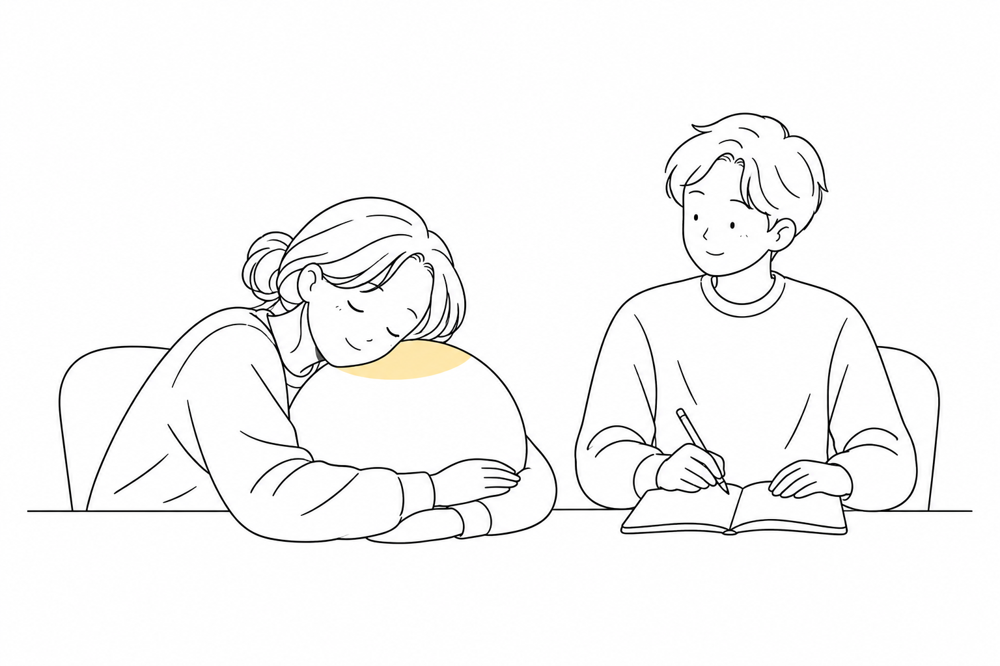

Master’s research · Empirical study · Unpublished
Napal: Design & Evaluation
An empirical study of resting with a robotic companion.

How does resting with a robotic companion shape the experience of a short break? Building on Napal’s design, this project combines prototype development with an empirical study, using quantitative and qualitative evidence to explore rest, recovery, and people’s perceptions of the robot.
The findings suggest potential benefits for aspects of rest and comfort, while responses vary across people and outcomes. The work informs the design of gentle, flexible robotic support that accommodates individual preferences and helps people settle into rest without adding unnecessary demands.